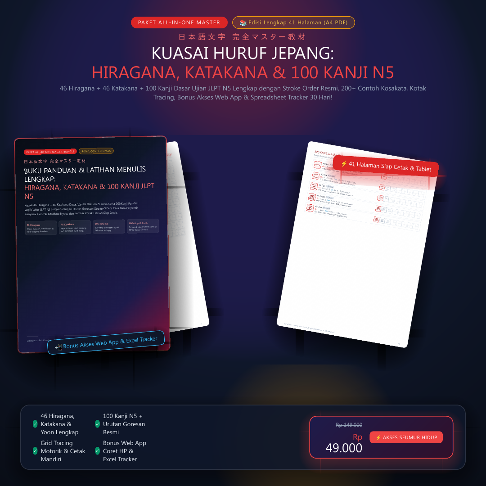
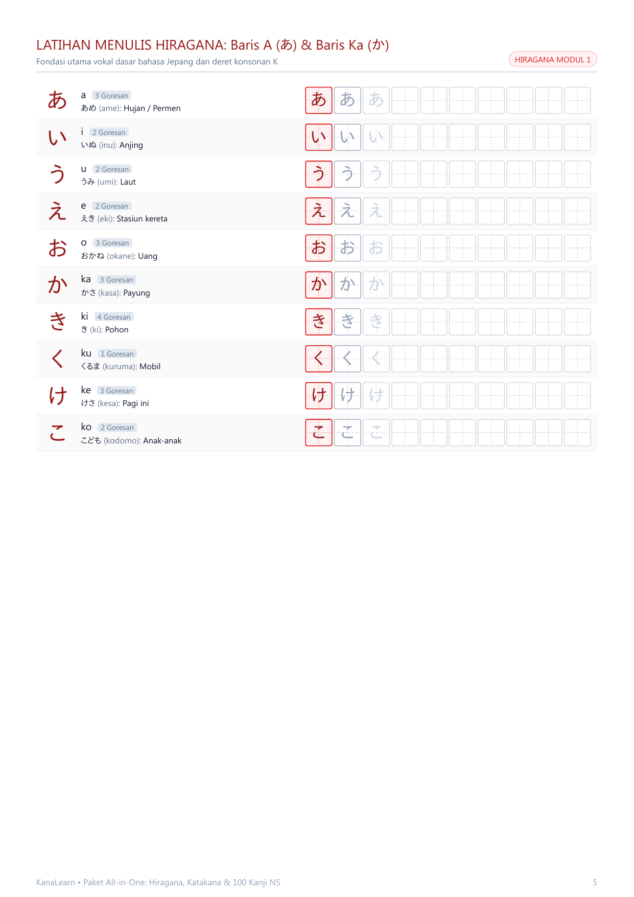
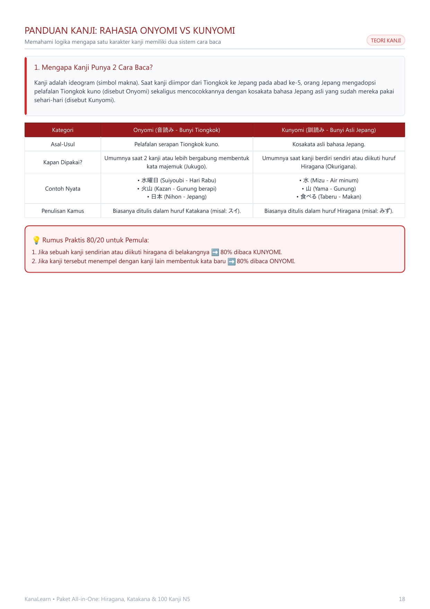
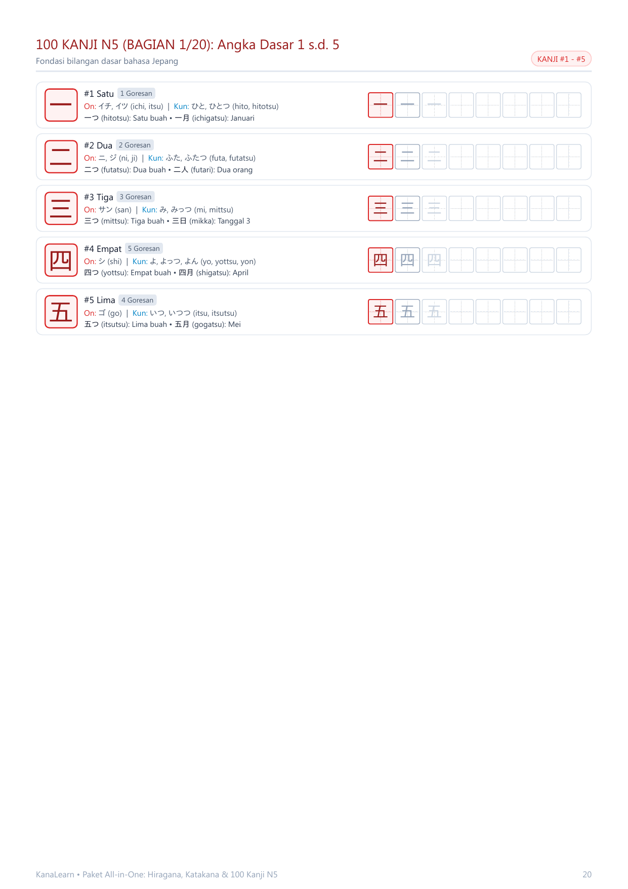

Bukan sekadar membaca pasif di layar. Latih memori motorik tanganmu dengan Buku Workbook Cetak 41 Halaman lengkap dengan stroke order resmi, plus Bonus Web App Coret di HP & Spreadsheet Tracker 30 Hari!

⚡ Pembayaran aman via QRIS (BCA, Mandiri, GoPay, Dana, OVO, ShopeePay)
Apakah kamu sering mengalami salah satu dari rasa frustrasi di bawah ini saat baru mulai belajar?
Menghafal kanji dengan cara "menggambar pemandangan". Tanpa tahu nomor urutan tarikan garis, bentuk huruf jadi kaku, berantakan, dan otak motorik tangan tidak merekamnya.
Kenapa satu kanji air (水) bisa dibaca mizu tapi di hari Rabu dibaca sui? Kebanyakan buku teori menjelaskan dengan bahasa berbelit-belit tanpa rumus praktis.
Goresan huruf yang hampir identik membuat pembelajar sering salah tulis dan salah baca saat latihan kosakata nyata.
Buku impor persiapan JLPT di toko buku harganya Rp150.000–Rp250.000 ke atas. Begitu dicoret pensil sekali, halamannya kotor dan tidak bisa dipakai latihan ulang.
Satu paket lengkap berisi modul kurikulum terstruktur dari huruf pertama hingga 100 Kanji N5.
Latih tanganmu menulis 46 huruf Hiragana dasar dengan panduan tarikan garis resmi. Dilengkapi tabel Dakuon (tanda petik ゛), Handakuon (tanda bulat ゜), kombinasi Yōon (きゃ, しゃ, ちゃ), dan contoh kosakata sehari-hari.

Kuasai bentuk garis tegas dan lurus alfabet Katakana untuk membaca nama menu, kata serapan bahasa Inggris (gairaigo), dan istilah modern. Lengkap dengan panduan khusus membedakan huruf mirip yang paling sering mengecoh!
Bongkar logika sejarah mengapa satu karakter kanji memiliki dua sistem cara baca. Pahami "Rumus Praktis 80/20" agar kamu bisa menebak cara baca kanji baru dalam kalimat tanpa harus membuka kamus terus-menerus!

Kuasai 100 kanji berfrekuensi kemunculan tertinggi di ujian resmi JLPT N5. Setiap karakter dilengkapi nomor urut, jumlah goresan, Onyomi, Kunyomi, 2 contoh kata nyata, dan 8 kotak grid latihan bergaris silang!

Akses instan langsung terbuka di halaman 41 PDF begitu pembelian selesai!
Males nge-print kertas? Gunakan fitur Kanvas Coret-Coret Interaktif di HP! Kamu bisa langsung menggoreskan jari atau stylus di layar ponselmu untuk melatih tulisan tangan secara gratis tanpa kertas!
Template spreadsheet rapi yang membagi 100 kanji N5 menjadi target santai 3–4 kanji per hari selama 30 hari. Dilengkapi dashboard otomatis dan formula progress real-time!
| Fitur Pembelajaran | Buku Impor Toko Buku | Paket All-in-One Master |
|---|---|---|
| Cakupan Materi | Biasanya hanya Kanji saja atau Kana saja (terpisah) | Lengkap 4-in-1: Hiragana, Katakana & 100 Kanji N5 |
| Penggunaan Berulang | Hanya bisa dicoret 1 kali (kertas kotor) | Bisa dicetak berkali-kali di rumah seumur hidup |
| Latihan di Layar HP | Tidak ada | Ada Web App Kanvas Touchscreen Interaktif |
| Tracker & Evaluasi | Manual di buku | Template Spreadsheet Otomatis 30 Hari |
| Biaya Investasi | Rp 150.000 – Rp 250.000+ | Hanya Rp 49.000 Sekali Bayar |
Semua alat yang kamu butuhkan untuk menguasai huruf Jepang dan lulus JLPT N5 ada di sini:
⚡ Akses Instan Seumur Hidup • Sekali Bayar Tanpa Biaya Langganan
Pembayaran instan via QRIS (BCA, Mandiri, GoPay, OVO, Dana, ShopeePay) • File PDF otomatis terkirim ke email detik ini juga.
A: Ini adalah Buku Digital (Ebook PDF High Resolution). Tidak perlu menunggu ongkir kurir! Begitu pembayaran selesai, file PDF langsung otomatis tersedia untuk diunduh dan bisa kamu buka di HP, tablet (GoodNotes/Notability), laptop, atau dicetak di kertas A4 di rumah/fotokopi.
A: Sangat bisa! Kamu mendapatkan Bonus Akses Web App KanaLearn Interaktif yang memiliki fitur kanvas sentuh. Kamu bisa langsung melatih goresan tangan menggunakan jari atau stylus langsung di layar ponselmu tanpa perlu dicetak ke kertas!
A: Sangat mudah melalui QRIS otomatis. Bisa dibayar menggunakan m-Banking (BCA Mobile, Mandiri Livin, BRImo, BNI) ataupun e-Wallet (GoPay, OVO, Dana, ShopeePay).
A: Instan detik itu juga! Begitu transaksi QRIS berhasil, halaman konfirmasi Lynk.id akan langsung menampilkan tombol download file PDF Master 41 Halaman, dan tautan unduhan juga dikirimkan secara otomatis ke alamat email yang kamu masukkan. Di halaman 41 PDF, sudah terdapat tautan & QR code untuk mengklaim kedua bonus eksklusif!